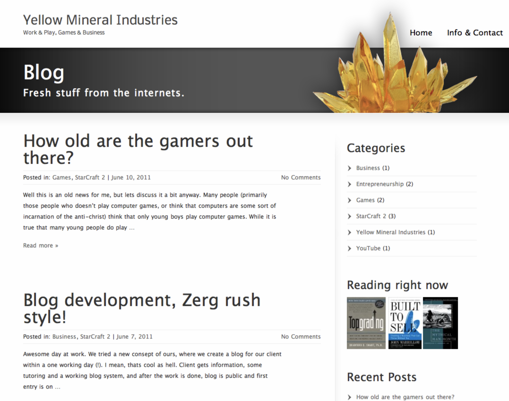

Yellowmineralindustries.com oli pitkään englanninkielinen blogini (mikä on blogi?), johon kirjoitin enimmäkseen pelaamisesta, valokuvaamisesta ja perhejutuista. Välillä blogi ehti olemaan myös Mediumissa, mutta sittemmin siirsin blogin osaksi pääsivustoani vuonna 2019.
Nykyään kirjoitan enimmäkseen yrityksen pyörittämiseen liittyvistä asioista (miten yrityksestä tehdään myyntikuntoinen, mikä on kassavirta, mikä on lean ja niin edelleen).
Pääset lukemaan yritykseen liittyviä kirjoituksiani tästä.